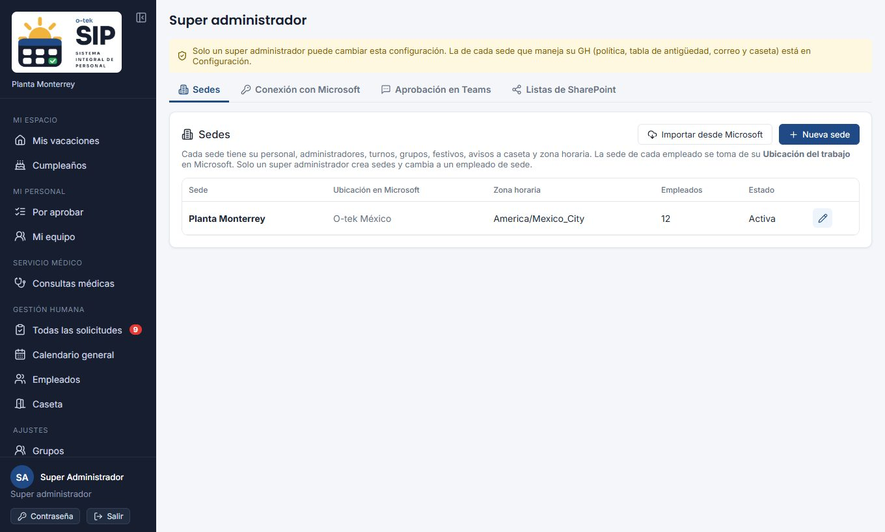
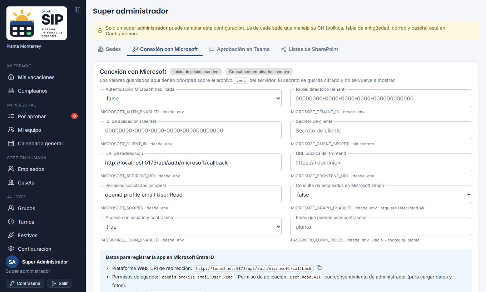
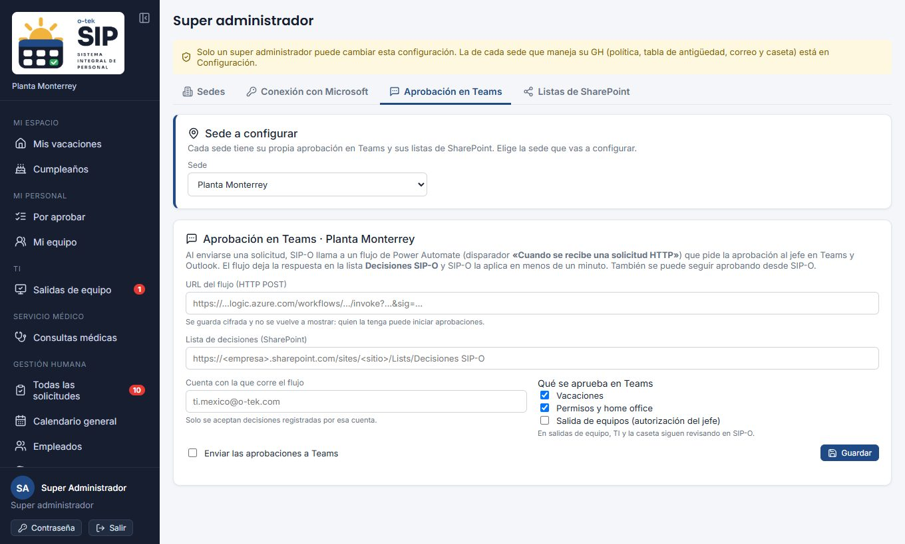

01Qué puede hacer
El super administrador ve todas las sedes y todas las pestañas: sus propias vacaciones, Mi personal, Gestión Humana y Ajustes completos (igual que GH, ver el Manual de Gestión Humana), Caseta y la pestaña Super administrador. De las consultas médicas solo ve la fecha, el paciente y el medicamento (en Por aprobar); la información clínica es del servicio médico.
- Crear y editar sedes, y conectar SIP-O con Microsoft 365.
- Configurar por sede la aprobación en Teams y las listas de SharePoint.
- Dar el tipo Super administrador a otra persona y asignar sedes adicionales a Gerencia GH.
Política, tabla de antigüedad, tipos de permiso, correo y caseta de cada sede están en Configuración, a cargo de su GH.
02Sedes
En Super administrador → Sedes creas y editas sedes: nombre, zona horaria (define el “hoy” de caseta, los permisos y los correos) y la Ubicación del trabajo de Microsoft con la que se asocian los empleados al buscarlos. También puedes importarlas desde Microsoft.

Para que alguien de Gerencia GH gestione varias sedes, edita al empleado y marca sus sedes adicionales.
03Conexión con Microsoft
En Conexión con Microsoft capturas el identificador de la aplicación (Client ID), el inquilino y el secreto. Con eso funcionan el inicio de sesión con Microsoft, la búsqueda de empleados (con su foto y su jefe) y el correo por Microsoft 365.

| Permiso de aplicación en Entra ID | Para qué |
|---|---|
| Mail.Send | Enviar correos desde el buzón de cada sede. |
| User.Read.All | Buscar empleados, su jefe y su foto. |
| Sites.Selected (escritura otorgada al sitio) | Escribir y leer las listas de SharePoint. |
El secreto se guarda cifrado y nunca se vuelve a mostrar. Si lo cambias en Entra ID, actualízalo aquí.
05Aprobación en Teams
Hay dos formas, ambas con Power Automate:

- Por lista (la que usa O-tek México): un flujo se dispara al crearse el elemento en la lista, pide la aprobación al correo del jefe y escribe la decisión en columnas de la lista. Se configura en la sección El jefe aprueba o rechaza desde Teams de cada lista; cómo crear el flujo está en Crear los flujos de Power Automate. Sirve para vacaciones, permisos, accesos a planta por retardo (la salida de equipo ahora es un permiso común y va en la lista de permisos).
- Por flujo HTTP (tarjeta Aprobación en Teams): un solo flujo para vacaciones, permisos y salidas de equipo (marca cuáles en Qué se aprueba en Teams). Requiere licencia Power Automate Premium en la cuenta del flujo.
SIP-O revisa las decisiones cada minuto; si hay personas esperando en caseta, cada 15 segundos. Si un jefe niega un acceso en Teams sin comentario, SIP-O le pide el motivo por correo y en Por aprobar.
SIP-O solo acepta decisiones escritas por la cuenta del flujo configurada y de alguien que pueda aprobar esa solicitud. Da permiso de edición de las listas solo a esa cuenta y a GH. Si la solicitud ya se resolvió en SIP-O, la respuesta de Teams se ignora.
06Crear los flujos de Power Automate
Cada lista con aprobación en Teams necesita su propio flujo. En O-tek hay uno por lista: SIP-O · Aprobación de vacaciones en Teams, SIP-O · Aprobación de permisos en Teams y SIP-O · Aprobación de salidas de equipo en Teams. Para una sede o lista nueva, repite estos pasos.
La cuenta de los flujos de O-tek tiene Power Automate para Office 365, que solo incluye conectores estándar. Usa siempre la forma por lista: SharePoint, Aprobaciones y Teams son estándar. La forma por flujo HTTP (disparador «Cuando se recibe una solicitud HTTP») es prémium y no funciona con esa licencia. Puedes revisar la licencia en Power Automate, en ⚙ → Ver mis licencias.
Antes de empezar
- Entra a make.powerautomate.com con la cuenta del flujo, la misma que pones en SIP-O como Cuenta con la que corre el flujo. Revisa que el entorno de arriba sea O-Tek Argentina S.A. (predeterminado).
- En la lista de SharePoint, crea tres columnas de una línea de texto: Decisión Teams, Comentario Teams y Respondió.
- En SIP-O, en Integraciones por sede → Listas de SharePoint, revisa que la lista envíe Correo del jefe / aprobador y Estado a alguna columna.
- En la misma tarjeta, activa El jefe aprueba o rechaza desde Teams. Elige las tres columnas del paso 2, deja los valores Approve y Reject, escribe la cuenta del flujo y guarda.
Crear el flujo
- Ve a Crear → Flujo de nube automatizado. Ponle un nombre como SIP-O · Aprobación de vacaciones en Teams.
- Elige el disparador de SharePoint «Cuando se crea un elemento» y luego el sitio y la lista.
- Agrega una Condición: Estado es igual a Solicitado, o a la opción que corresponda en tu lista. Así no se piden aprobaciones del historial ya resuelto. Los pasos siguientes van en la rama Sí.
- Agrega la acción Aprobaciones → «Iniciar y esperar una aprobación» con estos datos:
- Tipo: Aprobar/Rechazar: primero en responder.
- Título: tipo · Empleado · Folio.
- Asignado a: la columna Correo del jefe.
- Detalles: las fechas y los días.
- Vínculo del elemento: https://sip-o.otek.internal/, con el texto «Abrir SIP-O».
- Agrega la acción SharePoint → «Actualizar elemento», con el mismo sitio y la misma lista, y el Id del disparador. Llena así:
- Decisión Teams = Resultado (Outcome).
- Comentario Teams = Respuestas Comentarios.
- Respondió = Respuestas Correo electrónico del aprobador.
- Si pide Título, usa el Título del disparador.
- Pulsa Guardar y prueba con una solicitud real. Al jefe le debe llegar la tarjeta en Teams y en Outlook, y en menos de un minuto SIP-O muestra la solicitud aprobada o rechazada.
La tarjeta de cada lista en SIP-O tiene la misma guía, con los nombres reales de tus columnas, en Cómo crear el flujo en Power Automate (paso a paso).
Si la sede usa cadenas de aprobación, usa el disparador «Cuando se crea o modifica un elemento» y agrega a la condición que Decisión Teams esté vacía. Cuando la solicitud pasa al siguiente paso, SIP-O vacía esa columna y pone en Correo del jefe los correos de quienes aprueban ese paso. Así el flujo vuelve a pedir la aprobación.
Revisar que funcione
- Historial del flujo: en Mis flujos, abre el flujo y revisa el Historial de ejecuciones de 28 días. Si una ejecución falló, ábrela: el paso en rojo dice qué pasó.
- Decisiones no aplicadas: en SIP-O aparecen en la tarjeta de la lista, en Decisiones de Teams no aplicadas. Por ejemplo, si la escribió otra cuenta o si quien respondió no puede aprobar.
- Tiempo de espera: una aprobación de Power Automate espera hasta 30 días. Si vence, la solicitud sigue pendiente en SIP-O y se puede aprobar ahí.
- Conexiones: si cambias la contraseña de la cuenta del flujo, Power Automate puede pedir reparar las conexiones de SharePoint y Aprobaciones. Mientras no se reparen, no llegan tarjetas.
Cuando unas vacaciones quedan validadas, sin importar si se aprobaron en SIP-O o en Teams, SIP-O le avisa al empleado por correo y no necesita ningún flujo. El campo URL del flujo de avisos al empleado de la tarjeta Aprobación en Teams requiere licencia prémium; déjalo vacío.
07Solución de problemas
Microsoft niega el acceso a la lista.
La app necesita Sites.Selected con escritura otorgada a ese sitio (o Sites.ReadWrite.All) con consentimiento de administrador. El mensaje indica los permisos que tiene la app.
Una decisión de Teams no se aplicó.
Revisa los avisos de la lista en la integración: indican si la escribió otra cuenta o si quien respondió no puede aprobar.
Al aprobador no le llega nada a Teams.
La solicitud necesita un aprobador con correo. Revisa el jefe del empleado y que la lista de la sede tenga la aprobación en Teams activa.
Power Automate dice que el flujo usa un conector prémium.
La cuenta no tiene licencia prémium. Rehaz el flujo con los disparadores de SharePoint (Cuando se crea un elemento) en lugar de Cuando se recibe una solicitud HTTP.
No funciona la búsqueda en Microsoft.
Revisa el Client ID, el inquilino y el secreto, y que User.Read.All tenga consentimiento de administrador.